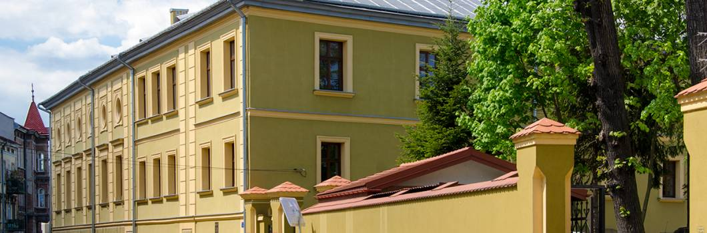

Powrót do strony głównej

Przemyski klasztor Sióstr Dominikanek w swej pierwotnej postaci wzniesiony został ok. połowy XVI wieku (pierwsza wzmianka pochodzi z 1595 roku).
Zespół zabudowań klasztornych, w skład którego wchodził założony na planie czworoboku klasztor oraz niewielki kościół,
w 1787 roku – po kasacie zgromadzenia – przejęty został przez państwo austriackie i przekazany na cele wojskowe.
Adaptacja kompleksu kolejno na magazyn, następnie szpital wojskowy, a ostatecznie w latach 80. XIX wieku na kasyno oficerskie,
całkowicie zmieniła charakter i wygląd założenia, pozbawiając go m.in. głównej dominanty tj. kościoła.
Po II wojnie światowej w dawnej sali balowej kasyna zlokalizowano kino „Kosmos”. Obecnie w tym kompleksie znajduje się m.in. siedziba Przemyskiej Biblioteki Publicznej oraz sala ślubów USC.
Recenzja miejsca